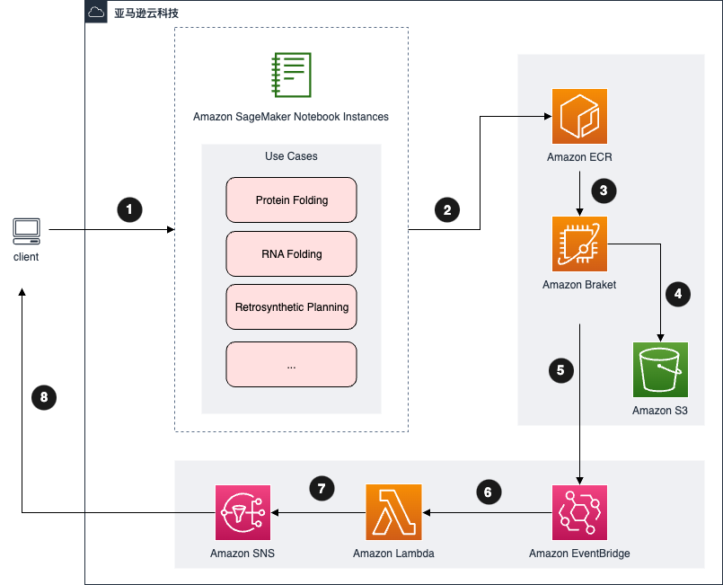

架构概览
下图展示的是使用默认参数部署本解决方案在亚马逊云科技中构建的环境。
图1 是AWS药物研发量子计算决方案架构图，本架构用于赋能用户，在药物研发领域，使用AWS云进行量子计算。

图1：药物研发量子计算解决方案架构图
此解决方案将使用 Amazon CloudFormation 模板部署在您的AWS云帐户部署资源，将提供三部分：
- 笔记本实验
- 批量评估
- 可视化
笔记本实验
-
该解决方案部署了一个实例用于 AWS SageMaker Notebook 用户可以在上面进行笔记本实验, 用经典计算和量子计算进行药物发现问题研究(1)。
-
笔记本附带针对不同药物研发问题的示例代码，如分子展开、分子模拟等。用户可以学习如何利用经典计算或通过访问 Amazon Braket利用量子计算研究这些问题。 请参考动手实验中的指南。
-
本方案在公共子网中创建了NAT网关，并通过因特网网关连接互联网。 笔记本实例部署在私有子网中，它能通过NAT网关访问互联网(3)。
批量评估
-
本方案使用AWS Step Functions工作流进行批量评估(4)。
-
根据不同的模型参数、资源、计算方式（经典或者量子计算），AWS Step Functions工作流会并行发起多种AWS Batch任务(5)。
-
每个AWS Batch任务使用预先构建好的存储在Amazon ECR(7)中容器镜像，根据不同的模型参数，用来评估药物发现中的问题(6)。
-
对于经典计算，AWS Batch任务会在本地评价药物发现中的问题，然后把结果存放到Amazon S3(10)。
-
对于量子计算，AWS Batch会以异步的方式把任务提交到Amazon Braket，把它变成Amazon Braket任务(9)。
-
AWS Step Functions工作流停在当前步骤，等待所有任务结束。
-
当一个Amazon Braket任务结束后，它会把输出存放在S3桶里，并触发一个Amazon EventBridge事件(11)。
-
AWS Lambda被Amazon EventBridge事件触发，它会解析Braket任务存储在S3上的输出文件，并把解析后的结果放到S3，并向AWS Step Functions工作流发送一个回调。
-
当所有子任务结束，AWS Step Functions工作流结束等待，前进到下一步(12)。
-
当批量评估完成后，AWS Step Functions工作流会向Amazon SNS发送一个通知，所有订阅了该主题的订阅者会收到此通知(13)。
可视化
-
在AWS Step Functions工作流执行过程中，会创建一个Amazon Athena表用于可视化。
-
用户可以通过Amazon QuickSight来查看批量评估的性能结果。
备注:
-
本方案所有计算资源（AWS Batch计算环境，AWS Lambda）都放在Amazon VPC私有子网中。
-
本方案为Amazon ECR, Amazon S3, Amazon Athena and Amazon Braket创建了VPC Endpoints。